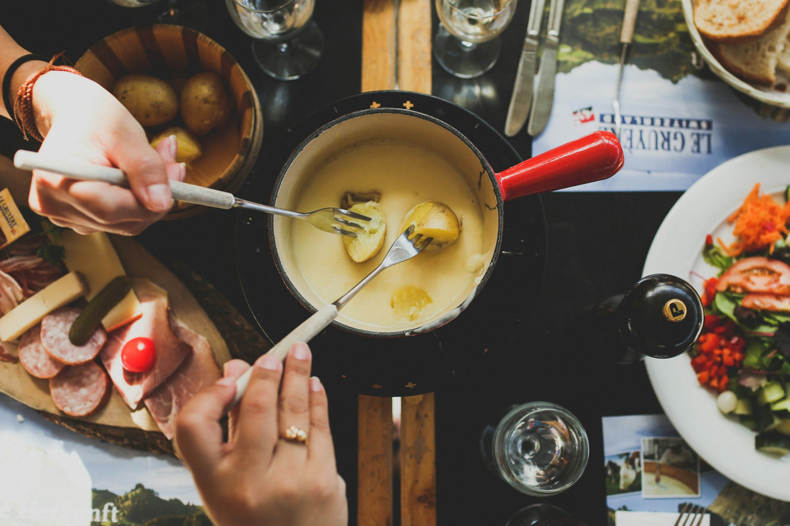
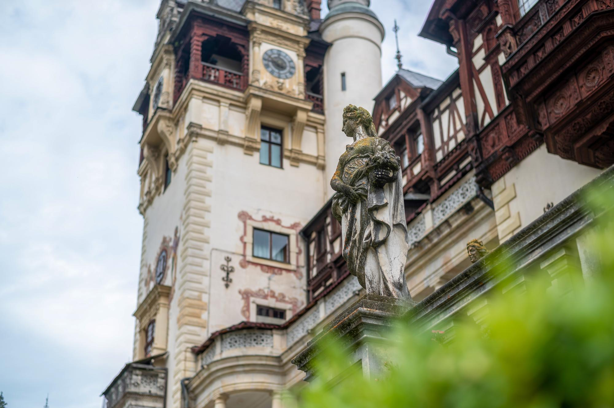

Destinos Imperdibles
Explora los lugares más emblemáticos de Suiza
Experiencias Únicas
Vive la cultura y tradición suiza

¿Listo para tu Aventura Suiza?
Planifica tu viaje perfecto a través de los Alpes
Comienza a PlanificarExplora los lugares más emblemáticos de Suiza
Vive la cultura y tradición suiza


Planifica tu viaje perfecto a través de los Alpes
Comienza a PlanificarDescubre los paisajes alpinos, ciudades históricas y experiencias únicas de Suiza.